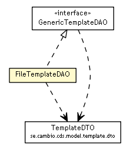

se.cambio.cds.model.template.dao
Class FileTemplateDAO

java.lang.Object
 se.cambio.cds.model.template.dao.FileTemplateDAO
se.cambio.cds.model.template.dao.FileTemplateDAO
- All Implemented Interfaces:
- GenericTemplateDAO
public class FileTemplateDAO
- extends Object
- implements GenericTemplateDAO
| Methods inherited from class java.lang.Object |
clone, equals, finalize, getClass, hashCode, notify, notifyAll, toString, wait, wait, wait |
FileTemplateDAO
public FileTemplateDAO()
getAllTemplates
public Collection<TemplateDTO> getAllTemplates()
throws InternalErrorException
- Specified by:
getAllTemplates in interface GenericTemplateDAO
- Throws:
InternalErrorException
getTemplate
public TemplateDTO getTemplate(String templateId)
throws InternalErrorException,
InstanceNotFoundException
- Specified by:
getTemplate in interface GenericTemplateDAO
- Throws:
InternalErrorException
InstanceNotFoundException
addTemplate
public void addTemplate(TemplateDTO templateVO)
throws InternalErrorException,
ModelException
- Specified by:
addTemplate in interface GenericTemplateDAO
- Throws:
InternalErrorException
ModelException
Copyright © 2013 Cambio. All Rights Reserved.